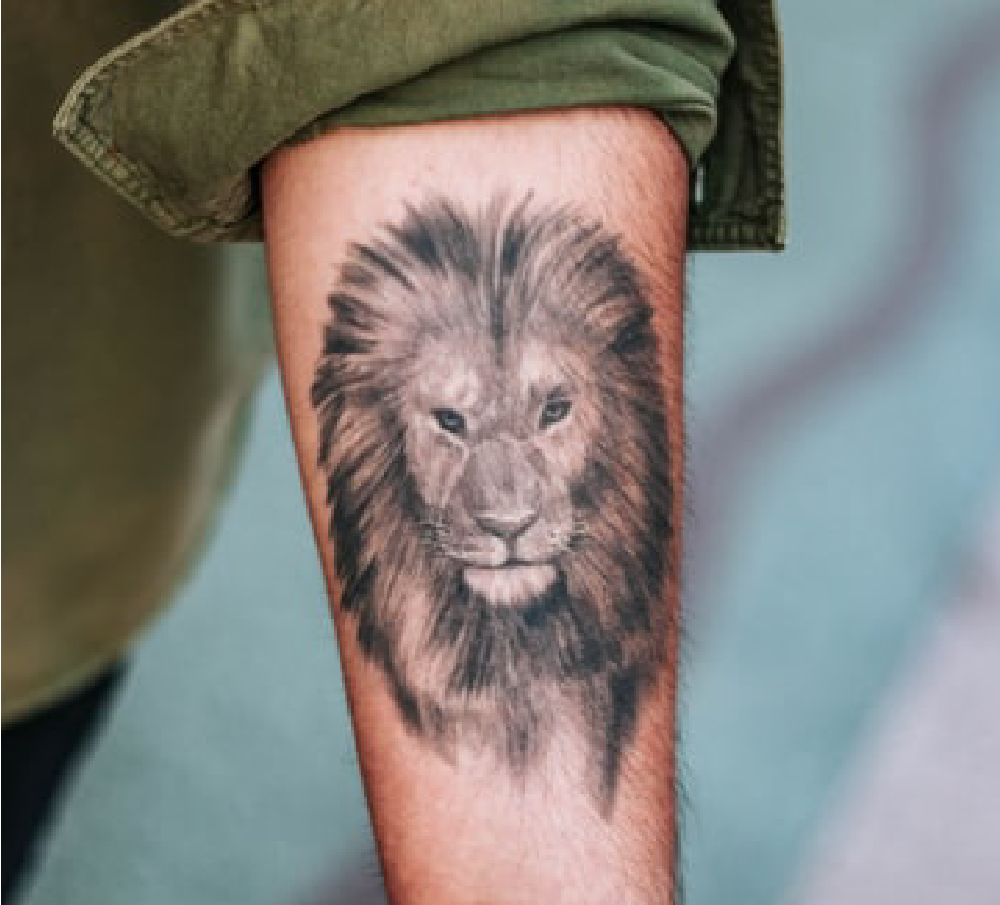
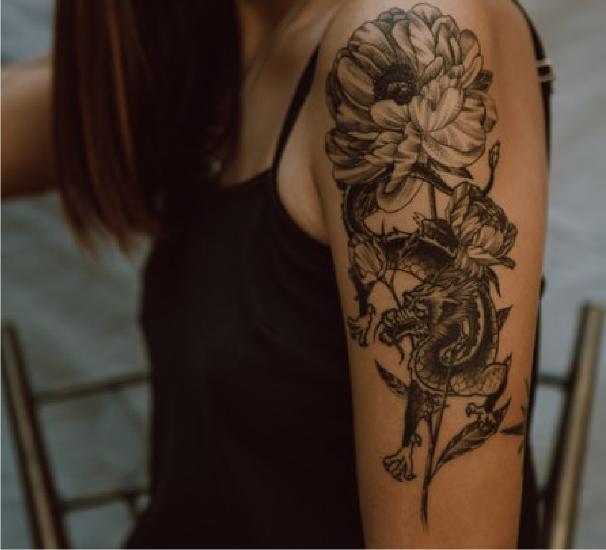
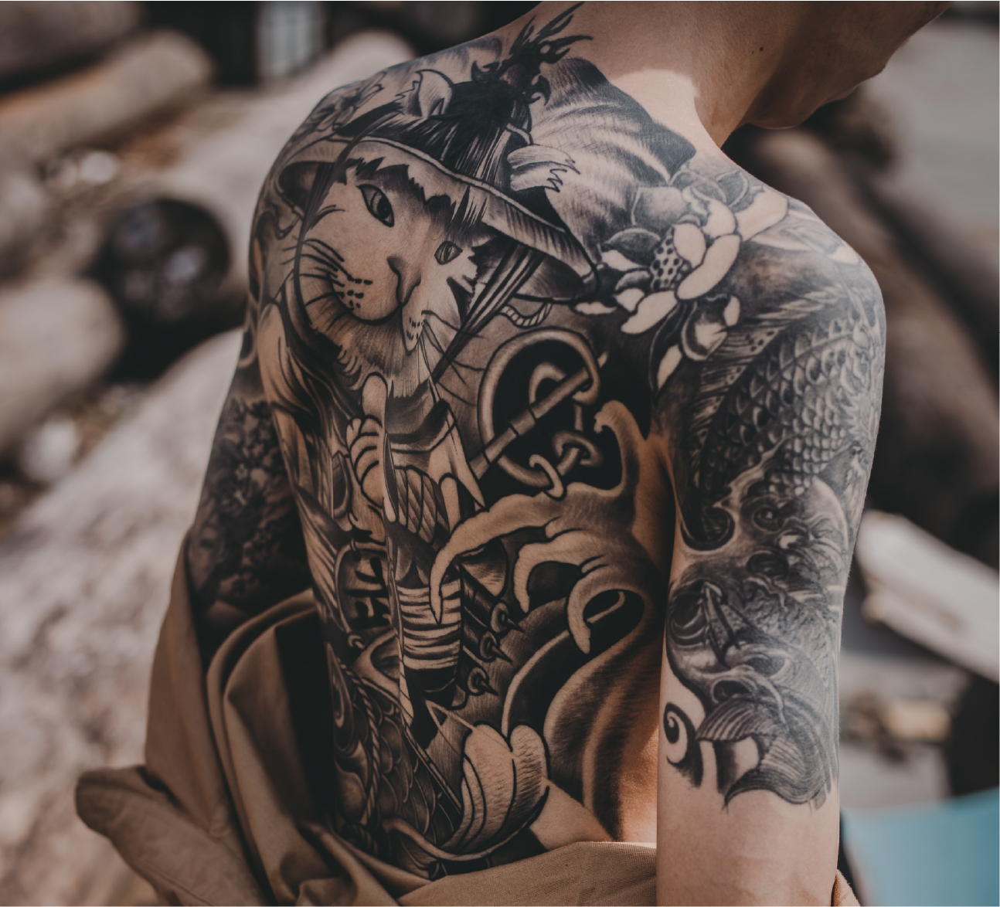
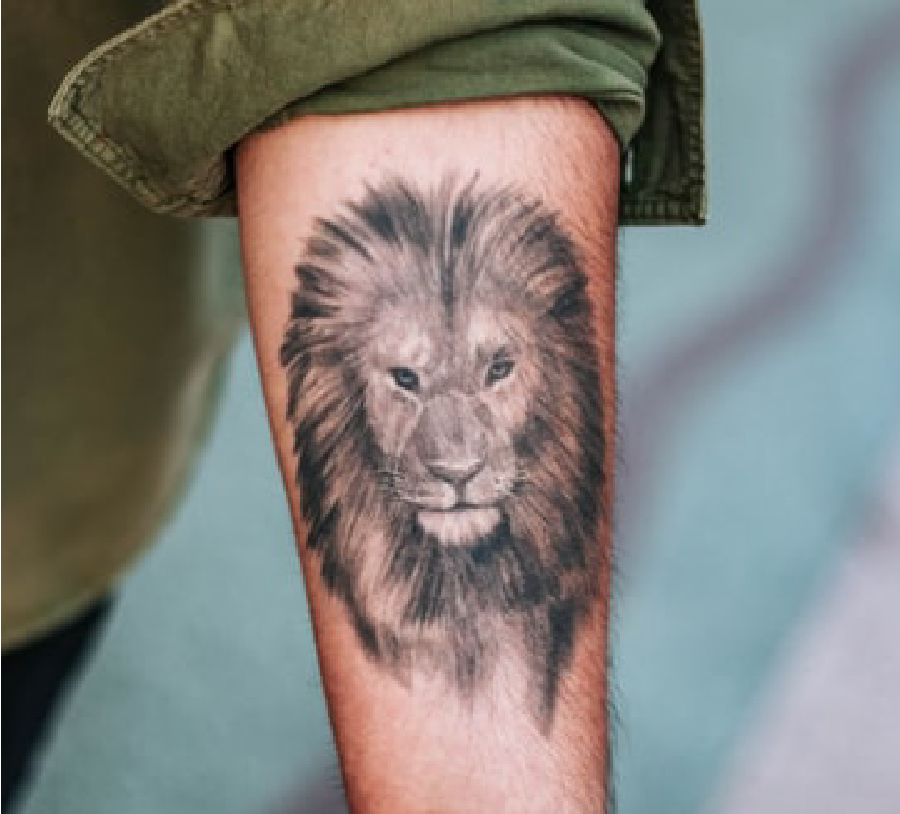
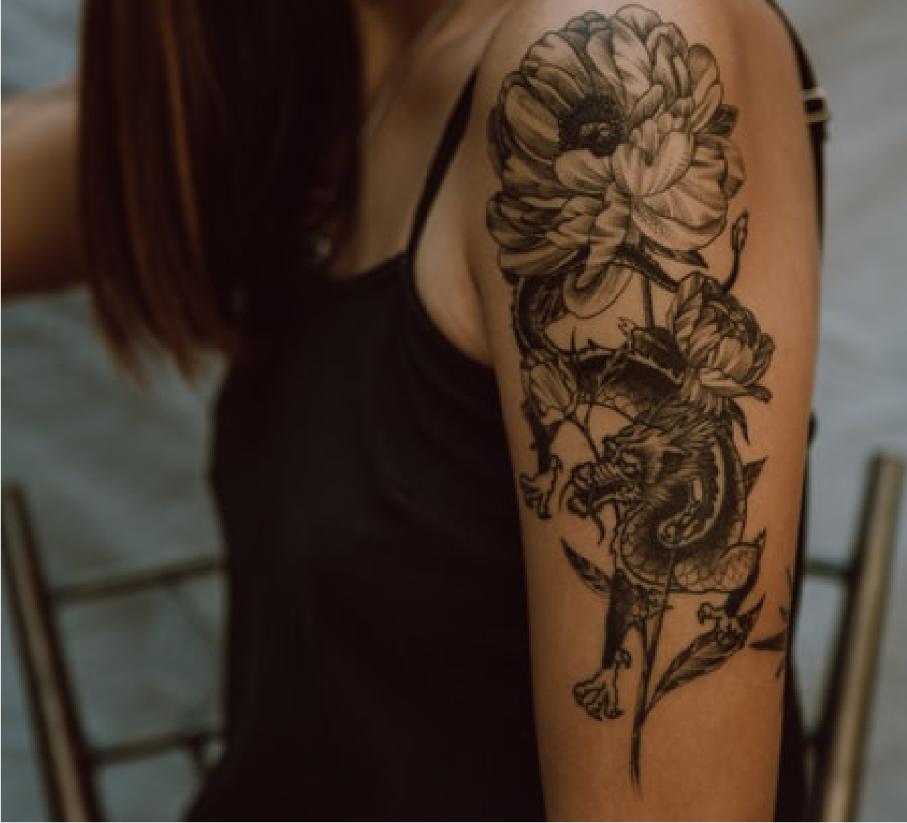
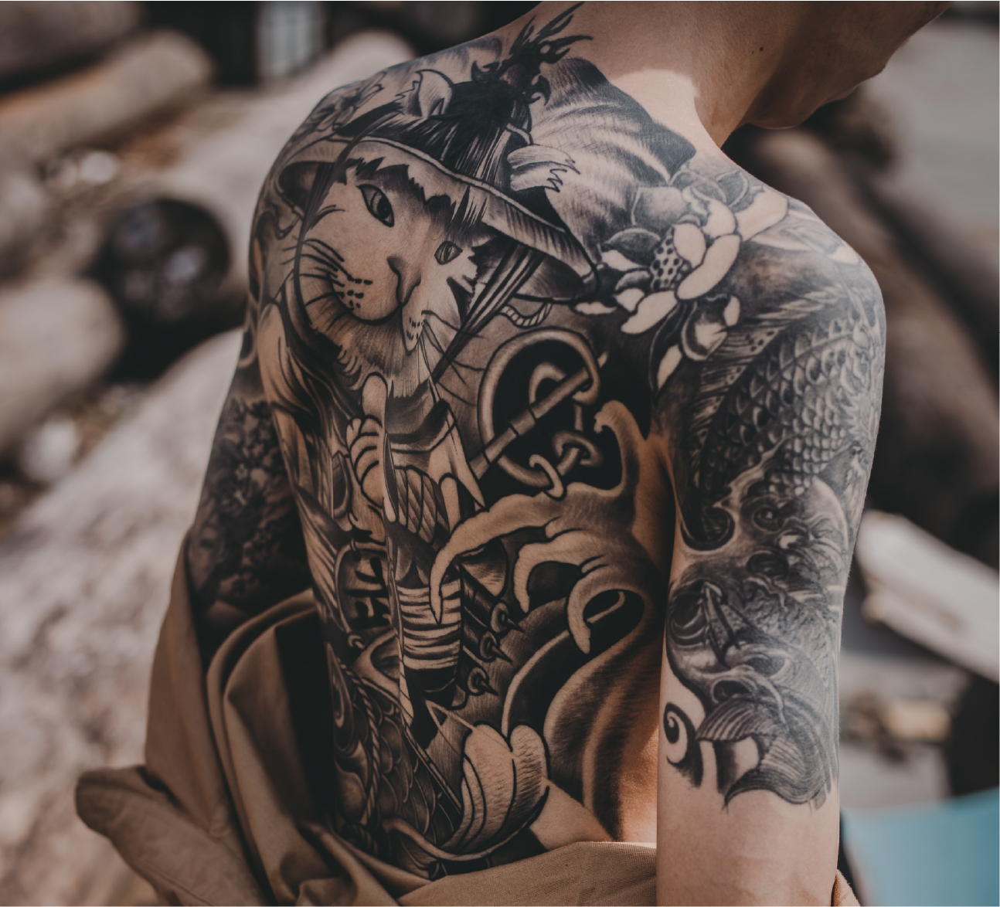

Conocenos un poco
Black Racer es un pequeño estudio de tatuajes y piercings situado en el barrio de Vallecas. El estudio cuenta con artistas de todos los estilos y técnicas, ofreciendote así un espacio con profesionalidad al 100%.
Contamos con varios años de experiencia en el sector y con el apoyo de grandes artistas a nivel tanto nacional como internacional. No dudes en venir y pedir información sobre lo que necesites.
Servicios
Tatuajes
Una gran variedad de estilos y diseños gracias al arte de nuestros tatuadores. Cada tatuaje es una obra de arte y podemos crear una para ti.
Piercings
Trabajamos diversas técnicas de anillado corporal, cuidando al máximo la higiene en nuestro estudio y usando los mejores productos del mercado.
Eliminación de Tatuajes
Te ofrecemos la técnica de eliminación de tatuajes con láser. No dudes en consultarnos para recibir toda la información que necesites.
Trabajos
 




